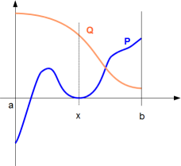
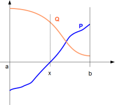
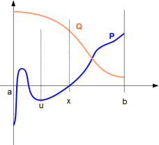

Elimination of the quantifier ∃ in ∃x ∈ ]a,
b[, P = 0 and Q1 > 0 and ... Qk > 0
where degreex(Q1) < degree x(P),
... and degreex(Qk) < degreex (P)
In order to be simple, we study ∃x ∈ ]a, b[, P = 0 and Q > 0. It is
equivalent to a disjunction over the following different cases according to the sign
of P'(x).
-
P'(x) = 0: we obtain ∃x ∈ ]a, b[, P = 0 and P' = 0 and Q > 0 can be
reduced. Follow me!

-
P'(x) > 0: there are multiple possibilities and this leads to a disjunction of:
- [ ( ∀x ∈ ]a,
b[, P' > 0) and (∀x ∈ ]a, b[, Q > 0) and P(a)
< 0 and P(b) > 0]
Either P' and Q are strictly positive over all ]a, b[ ; Then the
condition of existence of a root of P in ]a, b[ is P(a) < 0 and P(b) > 0.

-
or [∃u ∈ ]a, b[, ( ∀x ∈ ]u,
b[,
P' >
0)
and ( ∀x ∈ ]u, b[, Q >
0) and [P'(u) = 0 or Q(u) = 0] and P(u) < 0 and P(b) > 0]
Or P' and
Q are only strictly positive over an interval ]u, b[. But in
this case, if we take u such that ]u, b[ is the greatest interval such
that P' and Q are only strictly positive over it, then either P'(u) = 0
or Q(u) = 0. Indeed, if not, either P'(u) > 0 and Q(u) > 0 but in
this case, ]u, b[ is NOT the greatest interval such that P and Q are
only strictly positive over it. Or either P'(u) < 0 or Q(u) < 0.
But this is not possible because P' and Q are continuous fonction ;
Then the existence of a root of P in ]a, b[ is P(u) < 0 and P(b)
> 0.

-
or ∃v ∈ ]a, b[, ( ∀x ∈ ]a, v[,
P' >
0) and
( ∀x
∈ ]a, v[, Q > 0) and
[P(v) = 0 or Q(v) = 0] and P(a) < 0 and P(v) > 0Or P' and Q are
only strictly positive over an interval ]a, v[ and
P'(v) = 0 or P(v) = 0 ; Then the existence of a root of P in ]a, b[ is
P(a) < 0 and P(v) > 0.
- or ∃u, v ∈ ]a, b[, ( ∀x ∈
]u, v[,
P' >
0) and
( ∀x
∈ ]u, v[, Q > 0) and
[P'(u) = 0 or Q(u) = 0] and [P'(v) = 0 or Q(v) = 0] and P(u) < 0 and P(v) >
0
Or P and Q are only strictly positive over an interval ]u, v[ and [P(u)
= 0 or P(u) = 0] and [P(v) = 0 or P(v) = 0] ; Then the existence of a
root of P in ]a, b[ is P(u) < 0 and P(v) > 0.
- If P'(x) < 0, the case is similar.
- To know how to reduce formulas of the type (∀x
∈ ]u, v[, Q >
0) follow me
- To reduce ∃u ∈ ]a, b[, ... follow me